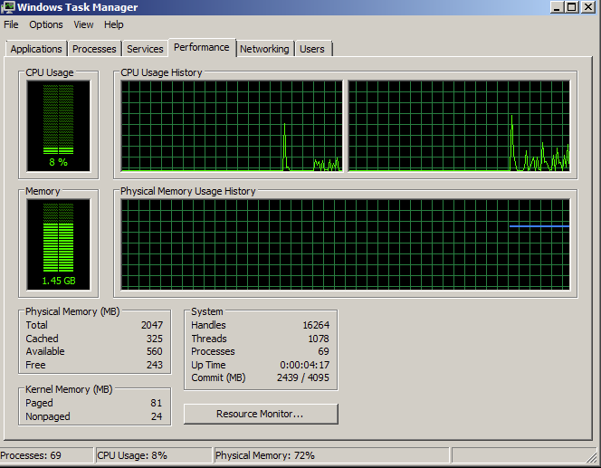
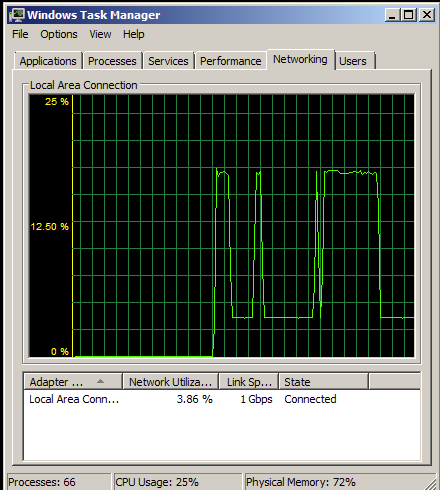
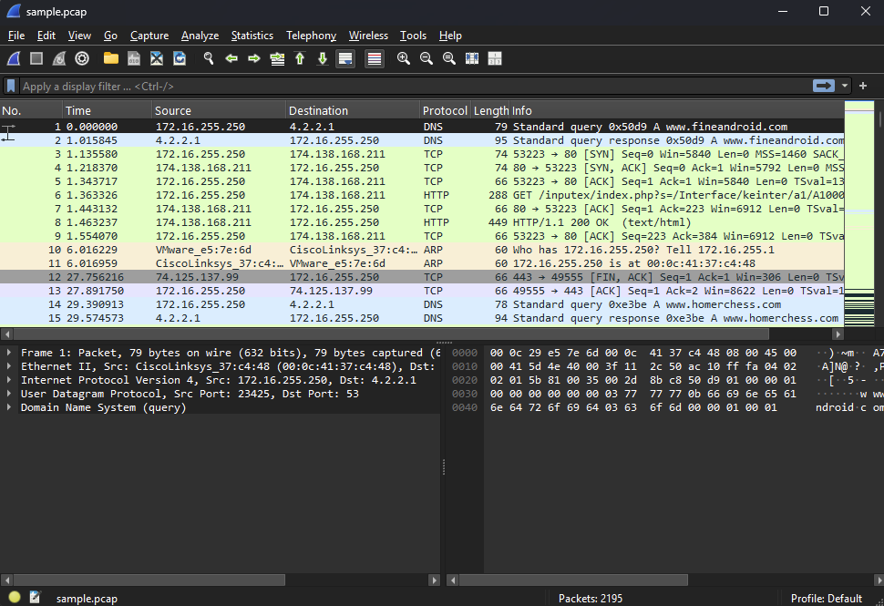
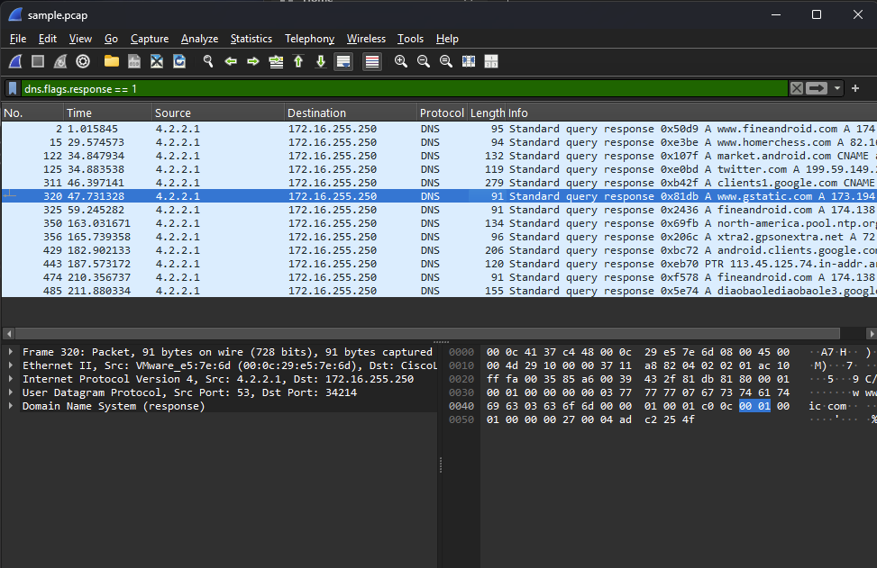
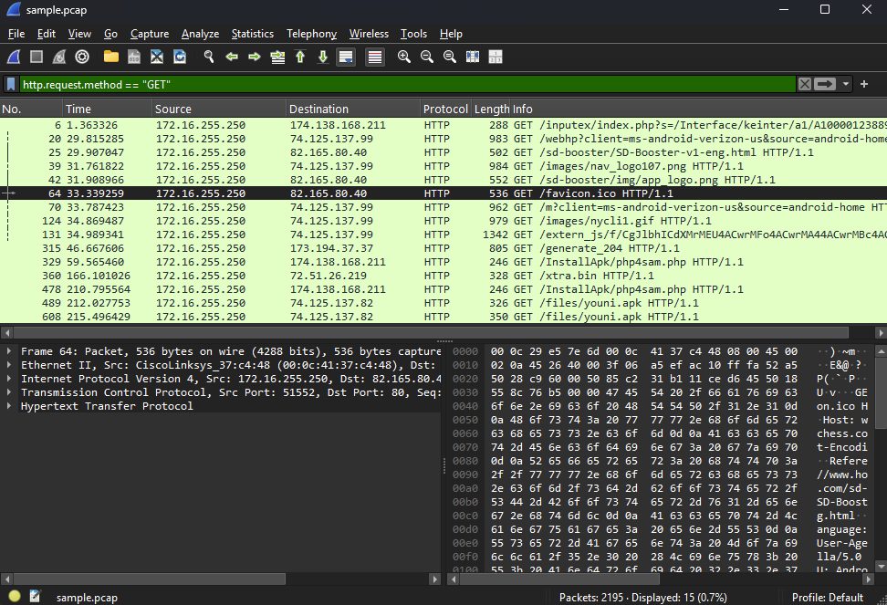
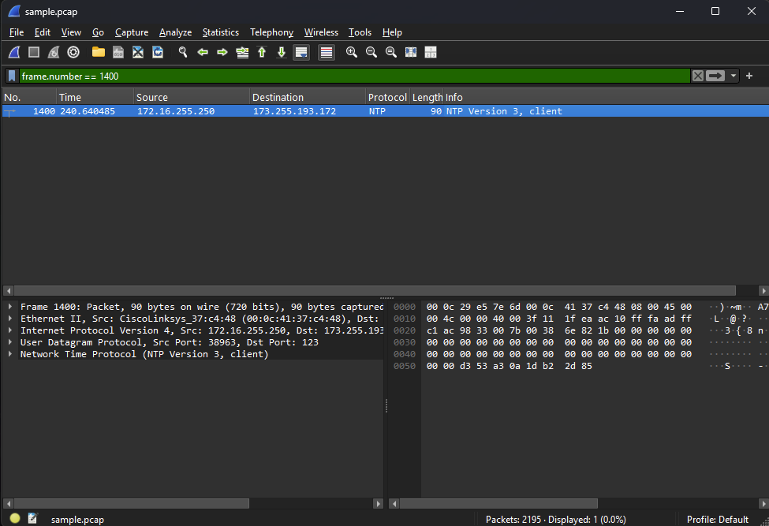
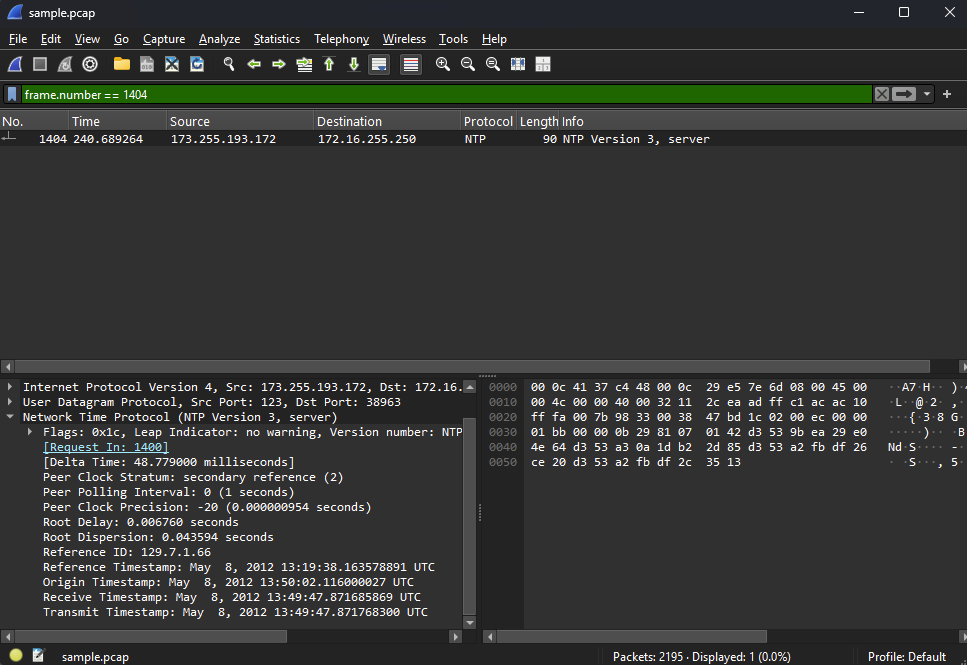
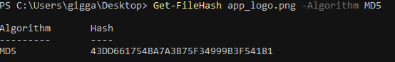
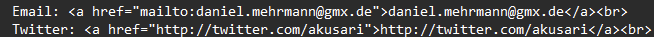

This lab had two parts: running a SYN flood against the Windows target with hping3 and watching what it did to network usage, then digging through a packet capture for DNS lookups, GET requests, and other details.
I ran a SYN flood from my Kali VM against the Windows Metasploitable machine at 192.168.255.2 using hping3. Baseline network usage before the attack:

Command used:
sudo hping3 -c 15000 -d 500 -S -w 64 -p 80 --flood --rand-source 192.168.255.2
This sends 15,000 spoofed SYN packets to port 80 as fast as possible. Network usage after running it for about 30 seconds:

1. How many packets does the capture contain?
2,195 packets.

2. Find and record all the DNS domain requests and all the IP addresses returned.
www.fineandroid.com → 174.138.168.211
www.homerchess.com → 82.165.80.40
market.android.com → 74.125.137.118
twitter.com → 199.59.149.230, 199.59.150.7, 199.59.150.39
clients1.google.com → 173.194.37.32–41, 46 (11 IPs)
www.gstatic.com → 173.194.37.79
fineandroid.com → 174.138.168.211
north-america.pool.ntp.org → 173.255.193.172, 209.114.111.1, 169.229.70.95
xtra2.gpsonextra.net → 72.51.26.219
android.clients.google.com → 74.125.45.100–102, 113, 138, 139
diaobaolediaobaole3.googlecode.com → 74.125.137.82

3. Record the full URI requests of all the GET requests.
www.fineandroid.com/inputex/index.php?s=/Interface/keinter/a1/A1000012388937/a2/3100120000006441/a3/ERIS/index/xian1234
www.google.com/webhp?client=ms-android-verizon-us&source=android-home&sky=mrdr&mnfst=1
www.homerchess.com/sd-booster/SD-Booster-v1-eng.html
www.google.com/images/nav_logo107.png
www.homerchess.com/sd-booster/img/app_logo.png
www.homerchess.com/favicon.ico
www.google.com/m?client=ms-android-verizon-us&source=android-home
www.google.com/images/nycli1.gif
www.google.com/extern_js/f/... (long tracking script URL)
clients1.google.com/generate_204
fineandroid.com/InstallApk/php4sam.php (x2)
xtra2.gpsonextra.net/xtra.bin
diaobaolediaobaole3.googlecode.com/files/youni.apk (x2)

4. What kind of packet is packet number 1400?
NTP, Version 3, client request.

5. What is the reference time stamp of packet number 1404?
May 8, 2012 13:19:38.163578891 UTC.

6. Export app_logo.png and find the MD5 hash of the file.
MD5: 43DD661754BA7A3B75F34999B3F54181

7. Export SD-Booster-v1-eng.html and then record the email and Twitter contacts in the document.
Email: daniel.mehrmann@gmx.de Twitter: twitter.com/akusari
